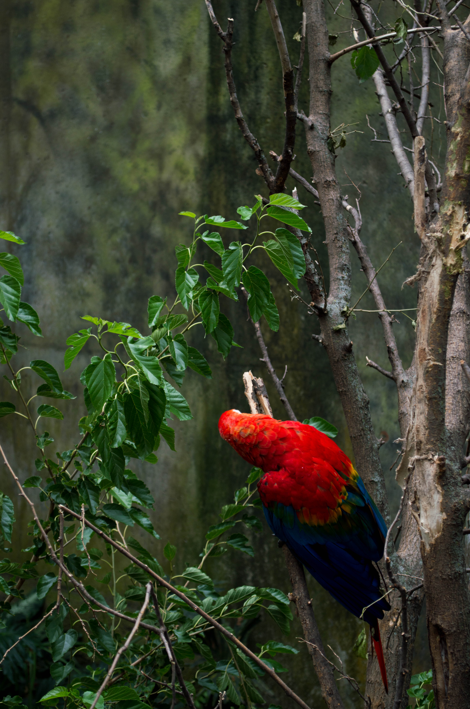

The Omaha Zoo (Henry Doorly Zoo and Aquarium) is located in Omaha, Nebraska. The Omaha Zoo was opened in 1894 as the Riverview Park Zoo. It spans over 130 acres and has major exhibits including the Desert Dome, Lied Jungle (a rainforest area), Kingdoms of the Night (a nocturnal animal exhibit), Cat Complex, and an Aquarium. The Omaha zoo is a leader in animal conservation and research. You can learn more about the Omaha Zoo here. A map of the Omaha Zoo can be found here.
In 2014, I went to the Omaha Zoo twice. Once was in August with my father. The second time was with my roommate and two friends before a concert in September. Both times were incredibly fun. The Omaha Zoo stands out from the other zoos I’ve been to because of how most of the exhibits are set up. It is clear that the architects and designers strived to closely mimic the respective habitats these animals would be in. This was not only seen in the animal enclosures; the visitor walkways also closely mimicked that same environment. My favorite exhibits there are the Cat Complex where all of the big cats are and the Gorilla exhibit. While in the Gorilla exhibit with my father, a gorilla ran up to the barrier where my dad was observing and hit the glass! Lied Jungle is also really awesome. The atmosphere makes it feel like you’re actually walking through a rainforest. Another cool exhibit is the butterfly garden. It is very similar to Riemann Gardens on campus. While I was there, I even got to ride a camel! Overall, the Omaha Zoo is definitely my favorite zoo so far.
The images on this page are from my visit in August. The image to the left is of a poison dart frog. While at the Omaha zoo, I learned that a frog's posion comes from the food that they eat!
Jump to Aquarium | Polar Bear | Big Cats | Gorillas | Rainforest | Birds
Aquarium
Polar Bear
Big Cats
Gorillas
Rainforest
Birds
